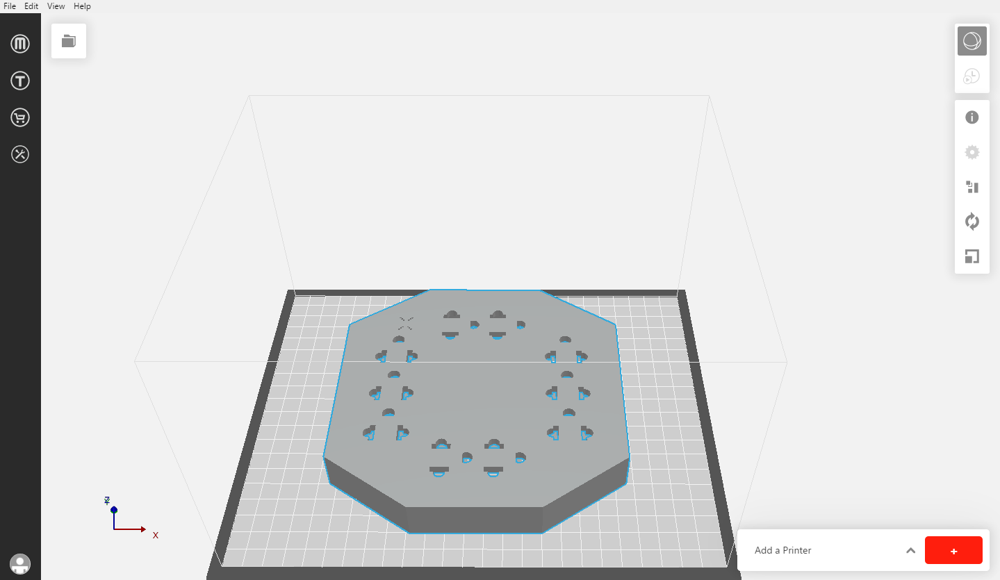
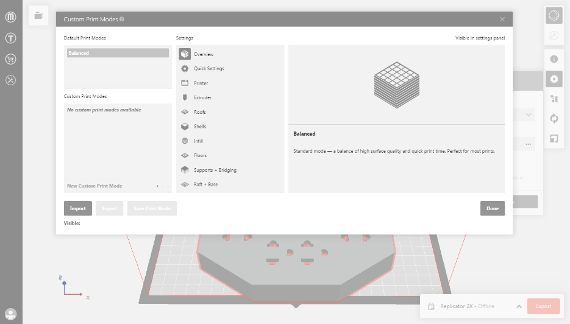
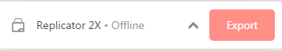
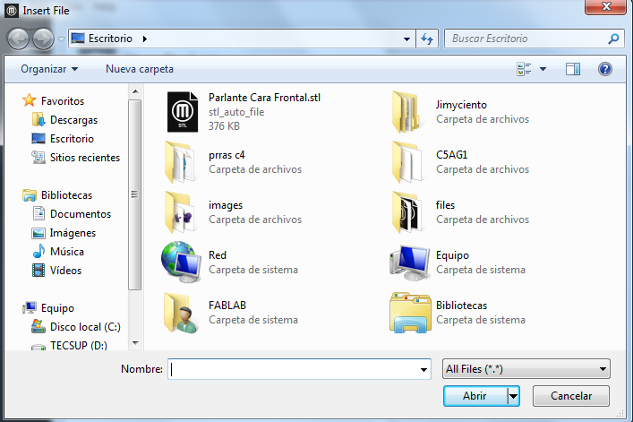
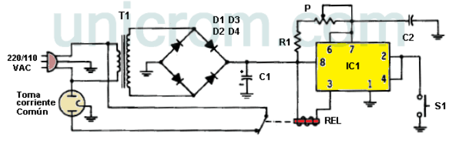
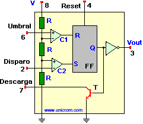

Presentación del proyecto preliminar
Configuración de software
Al momento de abrir el programa procederemos a insertar nuestra figura o diseño que innovamos y luego modificar a sus dimensiones correctas y poder apreciar el entorno del programa. 
Cada uno de estos iconos nos ayudara a tener mejores dimensiones las cuales son:
Podremos ajustar la visión de conjunto
Podremos modificar de manera más rápida y eficiente.
Veremos el modelo de impresora a utilizar
Permitirá elegir el extrusor que utilizaremos de un filamento ABS
Podemos cambiar de vista para una mejor visualización.
Permite girar el objeto en los ejes X, Y, Z.
Permite cambiar el tamaña del objeto.
Luego de haber modificado iremos a exportar nuestro diseño, nos vamos a la opción “Export”, ésta función dará una vista preliminar de la impresión datos como el tiempo que transcurrirá, la cantidad de filamento a utilizar y la cantidad de capas que realizará.
Una vez exportado colocaremos el archivo en una memoria USB ya que la forma de enviar archivos (por ahora) a la impresora es por tarjeta SD y guardamos.
Diseño de la caja
Figura 2 : "Diagrama Gantt del Proyecto de Fabricación Digital"
Problematica
El problema que tienen las personas son el tener pocos tomacorrientes en casa en distintos tipos de ambientes, tener un exceso de cargas nos obliga a usar una extensión de corriente el cual ayuda, pero no es algo tan agradable y tampoco muy seguro. Entonces para este proyecto se pensó en un dispositivo llamado tomacorriente 360° el cual dispone de varias entradas el cual ayudaría a colocar múltiples enchufes y tendría mayor capacidad de carga, este equipo también tendría un dispositivo que pueda apagar automáticamente el equipo o cualquier tipo de carga conectada a el enchufe este estaría accionado por un interruptor. Este dispositivo beneficiaría a las personas que tengan gran cantidad de equipos, también ayudaría a ahorrar espacio en paredes desde ya en el plano eléctrico se tendría en cuenta las medidas que necesitaría colocarlos, se vería también muy llamativo agradable, decorativo y muy útil.
Impacto Social
• Nuestro producto es accesible con diversas funcionalidades que ayudara a distintas personas
• Reducimos riesgos eléctricos
• Proporcionamos una mayor seguridad
• Aumentar la ventaja competitiva y reputación al implementar enfoques innovadores
Impacto Económico
• Nuestro producto puede salir a mercados exteriores al no haber algo parecido en el extranjero
• Si se fabrica en grandes cantidades sería muy rentable llegando a tener menos costo frente a productos similares
• Al ser un producto nuevo e innovador llamaría la atención y por lo tanto sería rentable
• El producto es competitivo con sus similares
Clientes
Ofrecimos nuestro producto a diferentes clientes
Clientes
Tabla 1 : "Tabla de nuestros clientes"
Temporizador electrónico variable con 555
Nos fijamos en el problema que tienen comúnmente las personas al momento de cargar un celular, laptops, o al tener encendida la televisión o radio, ya que ese defecto de pararnos a desenchufar y se nos olvida de desconectar, este circuito electrónico se va aplicar en nuestro enchufe de 360 grados, nos da un beneficio en el cual después de un tiempo programado nuestro temporizador de desconexión debe de actuar y detener el flujo de corriente.
